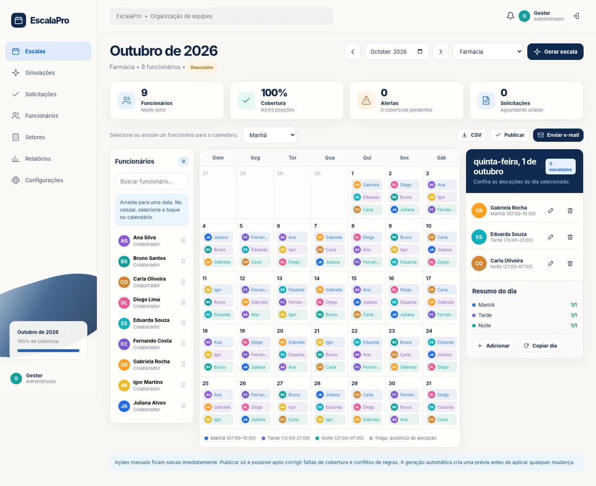

Calendário de arrastar
Organize turnos manualmente com arrastar e soltar, ou selecione no celular.
Arraste funcionários para o calendário, respeite as folgas aprovadas e gere propostas automaticamente com regras configuráveis — sem precisar de inteligência artificial.

Organize turnos manualmente com arrastar e soltar, ou selecione no celular.
Teste ausências e compare a escala antes de aplicar as alterações.
Receba pedidos e impeça que o gerador escale funcionários indisponíveis.
Identifique lacunas, jornadas excessivas e conflitos de descanso.
Exporte CSV ou prepare um e-mail com o arquivo exportado.
Simule a área do colaborador e acompanhe pedidos no mesmo navegador.
Adicione funcionários, setores, turnos e regras.
Arraste os cartões no calendário ou gere uma proposta.
Confira cobertura, descansos e solicitações aprovadas.
Publique localmente e prepare o envio por e-mail.
Menos trabalho repetitivo. Mais controle sobre as decisões.
Abrir EscalaPro →